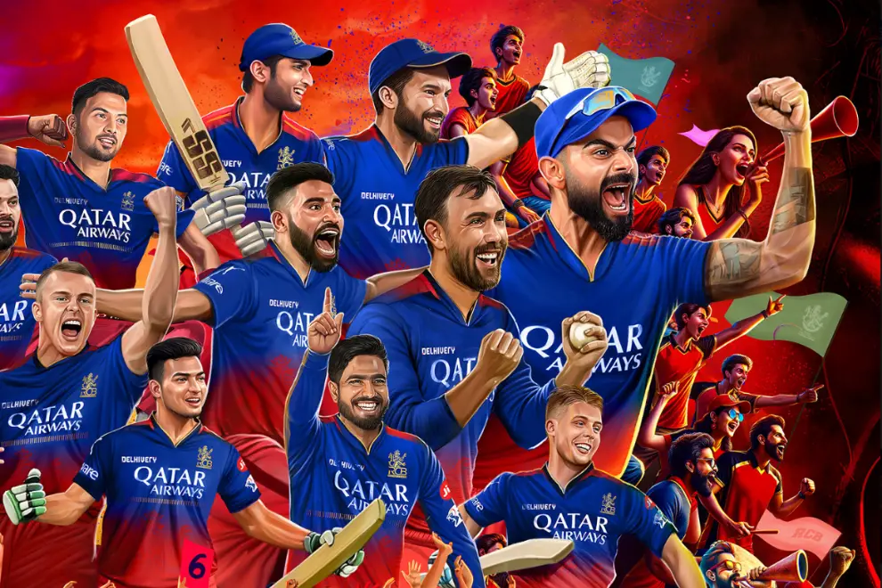

The Royal Challengers Bengaluru (RCB) squad for IPL 2025 features a strong blend of experienced international stars and talented Indian players. Rajat Patidar leads the team as captain, with stalwarts like Virat Kohli, Phil Salt, Mayank Agarwal, and Devdutt Padikkal forming the core batting unit. The wicketkeeping duties are shared by Jitesh Sharma and Tim Seifert. RCB’s all-rounders bring significant depth, with power-hitters and utility players like Liam Livingstone, Krunal Pandya, Tim David (currently injured), Romario Shepherd, and Jacob Bethell. Their bowling attack boasts a mix of pace and spin, including veterans Josh Hazlewood and Bhuvneshwar Kumar, along with young talents like Suyash Sharma, Yash Dayal, and Nuwan Thushara. Under the guidance of head coach Andy Flower and playing at their home ground, M. Chinnaswamy Stadium, RCB aims to finally clinch their maiden IPL title. They are currently facing Punjab Kings in the IPL 2025 final, making it a potentially historic season for the franchise.
